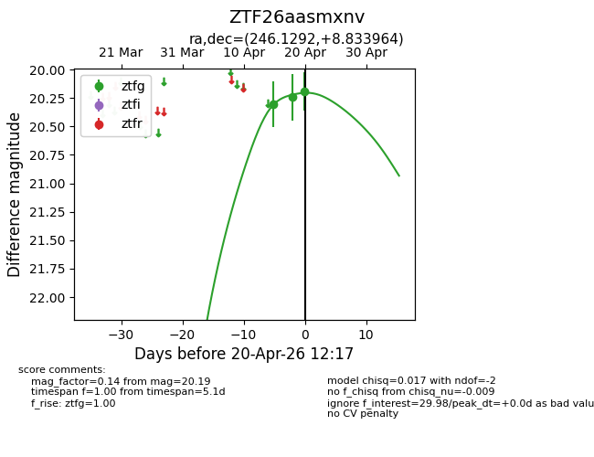
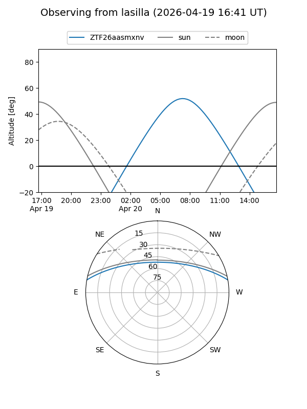
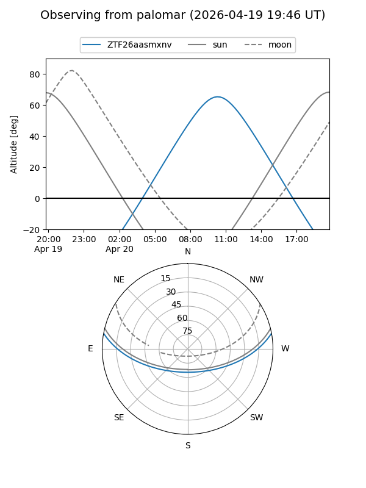
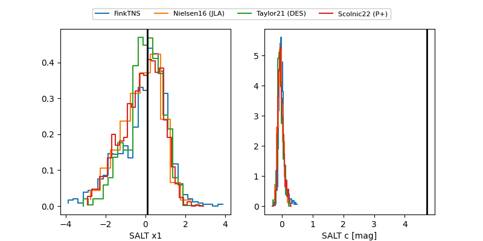

ZTF26aasmxnv
Target ZTF26aasmxnv at 2026-04-20 12:27
Aliases and brokers:
FINK: link
Lasair: link
ALeRCE: link
alt names
ZTF26aasmxnv (ztf,fink_ztf)
Coordinates:
equatorial (ra, dec) = 246.1292,+8.83396
equatorial (HMS+DMS) = 16:24:31.02,+08:50:02.27
galactic (l, b) = (23.4136,+36.58167)
Flags:
Photometry:
last ztfg=20.19
3 ztfg detections
Lightcurve

Visibility


Additional plots
